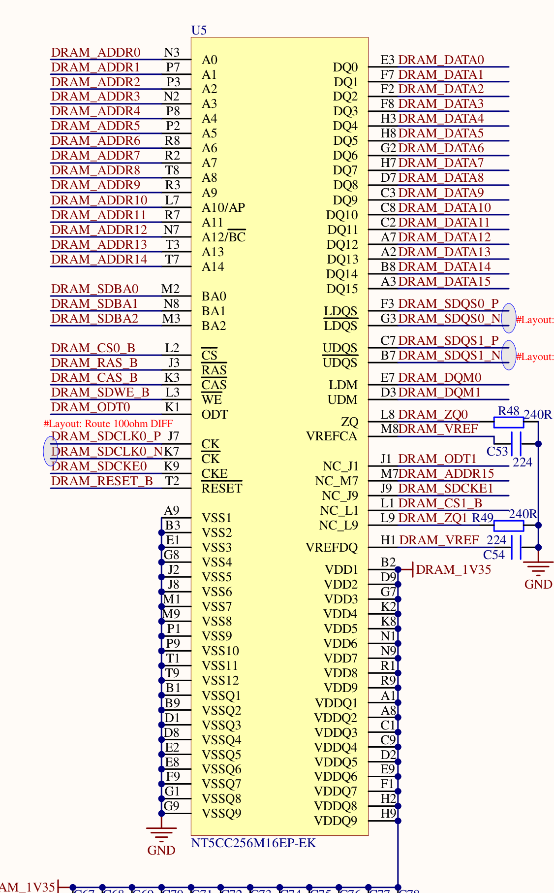
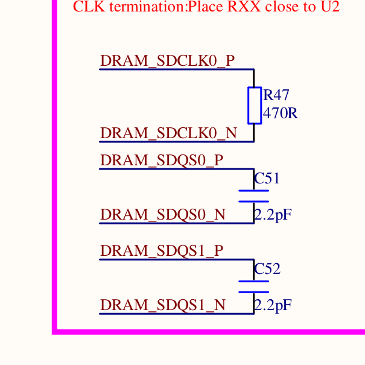

核心板第 3 页：DDR3L 的 96 个球怎么接
这一页（IMX6ULL_CORE_LVDDR3.SchDoc）只有一个主角：U5，NT5CC256M16EP-EK，一颗 16 位 DDR3L 颗粒，512MB。看起来密密麻麻，其实只有五组线：地址、数据（含 DQS 差分）、控制、电源、特殊（ZQ/VREF）。把五组分清，剩下的就是「哪根线该多长、哪个电阻为什么是这个值」。

新窗口打开读完这一章，你应该能
- 从型号算出容量：256M×16 = 4Gb = 512MB，并说出 15 位行地址 + 10 位列地址 + 8 bank 的来历
- 解释 VREF 为什么用 1.5K/1.5K 分压、为什么每颗 VREF 脚还要并 224
- 说出 ZQ 240Ω、时钟 470Ω+2.2pF、ODT 10K 下拉各自解决什么问题
- 区分「单端 50Ω」与「差分 100Ω」的走线要求，知道 DQS 为什么必须差分
- 用万用表/示波器按顺序判断 DDR 不工作的故障层级
3.4.1型号与容量：一颗芯片就是 512MB
NT5CC256M16EP-EK 拆开读：256M = 每颗 256M 个存储单元（word），16 = 每个 word 16 位，E = 电压 1.35V（DDR3L），K = 商业温度。所以单颗容量：
256M × 16 bit = 4096 Mbit = 4Gb = 512MB
它的内部组织是 8 个 bank，每个 bank 有 215=32768 行、210=1024 列：
8 × 32768 × 1024 × 16 bit = 4,294,967,296 bit = 4Gb
所以图纸上地址线是 A0–A14 共 15 根（行地址）、BA0–BA2 共 3 根（8 个 bank）、列地址复用 A0–A9。这也解释了为什么 A10 后面标 /AP（Auto Precharge）、A12 标 /BC（Burst Chop）——它们是复用功能，不是额外引脚。
为什么只用一颗？i.MX6ULL 的 DDR 控制器是 16 位数据总线，一颗 x16 颗粒刚好占满，不需要并列两颗。带宽：16 bit × 400MHz × 2（上下沿）= 1.6GB/s，对于 528MHz 的 A7 足够。
3.4.2五组信号，各管什么
| 组 | 本页网络 | 方向 | 要点 |
|---|---|---|---|
| 地址/块地址 | DRAM_ADDR0–14、DRAM_SDBA0–2 | SoC → DDR | 单端 50Ω，同组等长（±50mil） |
| 数据 | DRAM_DATA0–15、DRAM_DQM0/1 | 双向 | 按字节通道分组等长，DQM 是字节屏蔽 |
| 数据选通 | DRAM_SDQS0_P/N、SDQS1_P/N | 双向 | 差分 100Ω，与对应 DQ 组等长 |
| 控制 | CS0_B、RAS_B、CAS_B、SDWE_B、ODT0、SDCKE0、RESET_B | SoC → DDR | 全部低有效（_B），与时钟一起等长 |
| 时钟 | DRAM_SDCLK0_P/N | SoC → DDR | 差分 100Ω，RC 端接（R47 470R + C51 2.2pF） |
| 电源 | VDD1–9、VDDQ1–9、VSS1–12、VSSQ1–9 | — | VDD=VDDQ=DRAM_1V35；17×224 + 2×22µF 去耦 |
| 特殊 | ZQ0/ZQ1/ZQPAD、VREFCA/VREFDQ | — | 240Ω 校准 + 0.675V 参考 |
一个看图陷阱：U5 的 NC_J1 / NC_M7 / NC_J9 / NC_L1 / NC_L9 五个球，引脚名写着 NC（不接），但图纸上它们连着 DRAM_ODT1、DRAM_ADDR15、DRAM_SDCKE1、DRAM_CS1_B、DRAM_ZQ1。因为这颗颗粒是 16 位、单 rank，用不到 ODT1/CS1/ADDR15；但 SoC 侧这些信号仍然引出，PCB 上就走到 NC 球。读图时要分清「功能不用」与「物理没接」。
3.4.3VREF：0.675V 从哪来
DDR3L 的输入缓冲用「参考电压」判断高低：VIH/VIL 都是以 VREF 为中心。VREF 必须等于电源的一半：
VREF = 1.35V × 1500/(1500+1500) = 0.675V
本页用 R54 1.5K、R55 1.5K 从 DRAM_1V35 分压，图上注释 #Note: 1K/1.5K are OK——意思是 1K 也能用（分压电流从 450µA 增到 675µA，噪声抗性更好但功耗更大）。
关键细节：分压出来的 0.675V 不能直接拉根长线送到芯片，必须每个 VREF 脚就近并电容。VREFCA（M8）与VREFDQ（H1）各并一颗 224（C53、C54），分压节点再并 22µF（C65）+ 104（C66）。原因：VREF 是高阻节点，任何一点数字噪声灌进来都会让采样判决偏移，表现为「跑 memtester 随机出错」。
算一下分压电阻的误差影响：若 R54 是 ±1%（1.5K±15Ω），VREF 偏差约 ±6.8mV，占 0.675V 的 1%。DDR3L 规范允许 VREF 偏差约 ±1%，所以必须用 1% 电阻，5% 电阻会让时序余量直接消失。
3.4.4ZQ：240Ω 是「校准标尺」
U5 的 ZQ0（L8）与ZQ1（L9）各接 R48/R49 = 240R 到地，ZQPAD（N4）接 R52 240R。作用：DDR 内部输出驱动器的阻抗（ODT/OCD）靠这颗精密电阻校准。控制器会发 ZQ 校准命令，内部比较「240Ω 对应的电流」，据此调整输出阻抗，保证在 50Ω 传输线上不反射。
- 必须 1%：240Ω±1% 是 JEDEC 规定；用 5% 会让 ODT 阻抗偏离，眼图张开度变差。
- 必须单独走线到地：不能和数字地混在一根细线上，否则校准值被 IR drop 污染。
- R53 10K 是 ZQPAD 的附加偏置（不同封装/不同颗粒的 ZQPAD 处理略有差异），不是分压。
3.4.5时钟端接：470Ω + 2.2pF 是什么套路

新窗口打开这不是普通的串联匹配，而是 DDR3 常用的 RC 端接（也叫「虚拟端接」的一种简化）：
- 470Ω 串联：把驱动器的快速边沿「钝化」，减小过冲与 EMI，同时不完全吃掉幅度（470Ω 与走线 50Ω 分压，到达颗粒仍有约 0.9 倍幅度）。
- 2.2pF 到地：与 470Ω 构成低通，时间常数 τ=470×2.2p=1.03ns，截止约 154MHz——对 400MHz 时钟的基频影响可控，但能压掉 1GHz 以上的振铃。
- 贴近颗粒放置：注释特意写「Place RXX close to U2」，因为端接要放在「信号到达端」，放在 SoC 侧就变成源端匹配，效果完全不同。
注意：时钟是差分的，P/N 各有一套 RC，且 C51/C52 必须对称布放，否则差分失衡会转化成共模噪声。
3.4.6ODT 与「10K 下拉」
图上 R50/R51 = 10K 接在 DRAM_ODT0/ODT1 到地，作用是「未驱动时给一个确定电平」。DDR 的 ODT 脚高有效（内部端接开启），若悬空，CMOS 输入可能停在阈值附近，内部端接时开时关，读眼图会看到随机塌陷。10K 下拉保证默认关闭。
这与 I2C 的上拉逻辑正好相反：上拉用于「默认无效、需要时拉低」的低有效信号；下拉用于「默认关闭、需要时拉高」的高有效信号。看图时先判断极性，再判断该上拉还是下拉。
3.4.7去耦与布局：17 颗 224 的含义
U5 底部 9 个 VDD + 9 个 VDDQ 全部接 DRAM_1V35，旁边一排 C67–C78：1 颗 224 + 1 颗 22µF + 10 颗 224，再加芯片上方的 C58 22µF、C59–C64 六颗 224。合计 17 颗 224 + 2 颗 22µF。
为什么这么多：DDR 在读写突发时电流变化极快（DI/dt 可达 mA/ps 级），每个电源球都需要「本地电荷池」。经验公式：每颗 224 服务 1–2 个电源球，距离 ≤3mm，过孔直达地平面。
本板 PCB 上这 17 颗 224 就贴在颗粒背面正对球位——这也是为什么核心板能做得很小：正面只放 DDR 颗粒，去耦全在背面。
3.4.8故障判据：DDR 不工作时按顺序查
| 层级 | 测什么 | 正常值 | 异常含义 |
|---|---|---|---|
| 1 电源 | VDD/VDDQ（任一颗 224 焊盘） | 1.35V ±3% | 0V → 上游 U11/L3 未工作；偏低 → 负载短路 |
| 2 参考 | DRAM_VREF（C53 正端） | 0.675V ±1% | 偏离 → 分压电阻错值或 VREF 脚漏电 |
| 3 校准 | ZQ 焊盘对地 | 240Ω ±1% | 开路 → 颗粒没焊好/ZQ 球虚焊 |
| 4 时钟 | SDCLK_P/N（示波器差分） | 400MHz、0.9V 幅度、无振铃 | 无时钟 → SoC 的 DDR 时钟未使能（时钟门控） |
| 5 复位 | DRAM_RESET_B | 上电后由低变高 | 一直低 → POR 未释放 |
| 6 数据 | DQ 静态阻抗 | 各脚对地 40–60Ω（内部 ODT 关闭时高阻） | 某脚 0Ω → 颗粒或 SoC 损坏 |
顺序不能颠倒：电源→参考→校准→时钟→复位→数据。跳过 VREF 直接看数据线，是最常见的误判来源。